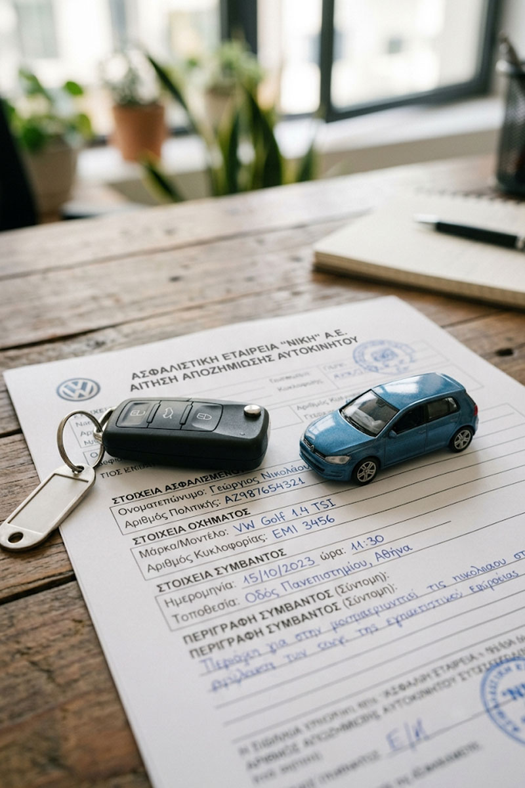

Αντικείμενο
Αυτοκινητικές Διαφορές
Μετά το ατύχημα, η δικαίωση δεν πρέπει να αργεί.
«Μετά την ταραχή του ατυχήματος, υπάρχει πάντα δρόμος για δικαίωση.»
Ένα τροχαίο ατύχημα είναι πάντα ξαφνικό και συχνά τραυματικό — σωματικά, ψυχολογικά και οικονομικά. Στη διαδικασία που ακολουθεί, εντολείς μας βρίσκονται συχνά αντιμέτωποι με ασφαλιστικές εταιρίες που επιδιώκουν να ελαχιστοποιήσουν την αποζημίωση, χωρίς να γνωρίζουν τα πλήρη δικαιώματά τους.
Εκπροσωπούμε παθόντες τροχαίων ατυχημάτων και τους συγγενείς τους σε αξιώσεις αποζημίωσης υλικών ζημιών, σωματικών βλαβών και ηθικής βλάβης, καθώς και σε ποινικές δίκες κατά υπαίτιων οδηγών, με στόχο πάντα την πλήρη και δίκαιη αποκατάσταση.
Κατανοούμε πως τα πρώτα βήματα μετά από ένα ατύχημα είναι κρίσιμα και συχνά συγκεχυμένα. Γι' αυτό είμαστε διαθέσιμοι να καθοδηγήσουμε τον παθόντα από την πρώτη στιγμή, ώστε να μη χαθούν σημαντικά αποδεικτικά στοιχεία ή προθεσμίες.
Σε κάθε υπόθεση, επιδιώκουμε πρώτα μια δίκαιη εξωδικαστική διευθέτηση με την ασφαλιστική εταιρία· όταν όμως η πρόταση δεν ανταποκρίνεται στην πραγματική ζημία, δεν διστάζουμε να προχωρήσουμε σε δικαστική διεκδίκηση για λογαριασμό του εντολέα μας.

Αποζημίωση Υλικών Ζημιών
Πλήρης διεκδίκηση εξόδων επισκευής, απαξίωσης οχήματος και διαφυγόντων κερδών.
Σωματική Βλάβη & Ηθική Βλάβη
Αξιώσεις για ιατρικά έξοδα, απώλεια εισοδήματος και ψυχική ταλαιπωρία.
Θανατηφόρα Δυστυχήματα
Στήριξη οικογενειών σε αγωγές αποζημίωσης για την απώλεια συγγενικού προσώπου.
Συχνές ερωτήσεις για τροχαία ατυχήματα
Τι πρέπει να γνωρίζετε αμέσως μετά από ένα ατύχημα.
Τι πρέπει να κάνω αμέσως μετά από τροχαίο ατύχημα;
Καλέστε τροχαία και ασθενοφόρο αν υπάρχει τραυματισμός, φωτογραφίστε τη σκηνή, συλλέξτε στοιχεία μαρτύρων και μη δεχτείτε καμία πρόταση αποζημίωσης πριν συμβουλευτείτε δικηγόρο.
Πόσο χρόνο έχω για να διεκδικήσω αποζημίωση;
Η αξίωση αποζημίωσης από τροχαίο παραγράφεται συνήθως μετά από πέντε χρόνια, όμως η έγκαιρη συλλογή αποδεικτικών στοιχείων είναι κρίσιμη για την επιτυχία της υπόθεσης.
Η ασφαλιστική μού προσφέρει λιγότερα από όσα δικαιούμαι — τι κάνω;
Δεν είστε υποχρεωμένοι να αποδεχτείτε την πρώτη πρόταση. Μπορούμε να διαπραγματευτούμε ή να προχωρήσουμε σε δικαστική διεκδίκηση για το πλήρες ποσό που δικαιούστε.
Δικαιούμαι αποζημίωση αν είχα μερική ευθύνη στο ατύχημα;
Ναι, η αποζημίωση μπορεί να μειωθεί ανάλογα με τον βαθμό συνυπαιτιότητας, αλλά δεν αποκλείεται εντελώς εκτός αν η ευθύνη σας είναι αποκλειστική.
Τι γίνεται αν ο υπαίτιος οδηγός δεν είχε ασφάλεια;
Σε αυτή την περίπτωση η αποζημίωση καταβάλλεται από το Επικουρικό Κεφάλαιο, το οποίο καλύπτει θύματα ανασφάλιστων ή αγνώστων οχημάτων υπό προϋποθέσεις.
Μπορώ να διεκδικήσω αποζημίωση ως συνεπιβάτης;
Ναι, οι συνεπιβάτες δικαιούνται πλήρη αποζημίωση ακόμη κι αν ο οδηγός του οχήματός τους ήταν υπαίτιος, καθώς θεωρούνται τρίτοι ζημιωθέντες.